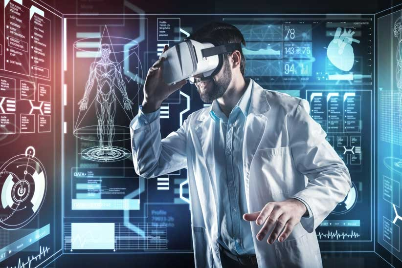

ARTIFICIAL INTELLIGENCE - What to expect from the future of artificial intelligence? I really hoped we had flying cars these days. I've been waiting for this, as many have said in the past. We don't have cars that can fly and we probably won’t, but there is a lot of positive research for evolution in the field of medicine. Here are some ways in which AI could help in medicine in the future: Diagnosis: AI can be used to help diagnose diseases more accurately and quickly. Personalized treatment: ML algorithms can determine which treatment is most effective for a specific individual based on their genetic and health information. Patient monitoring: AI can help monitor patients in real-time and alert doctors if there is a significant change in their condition. Public health: AI can help predict disease outbreaks and track their spread in real-time. ML algorithms can identify patterns and predict where and when disease outbreaks may occur. In summary, You are not going to lose your job to a machine if you are the one who programs it. Just kidding, doctors are still going to be needed.
